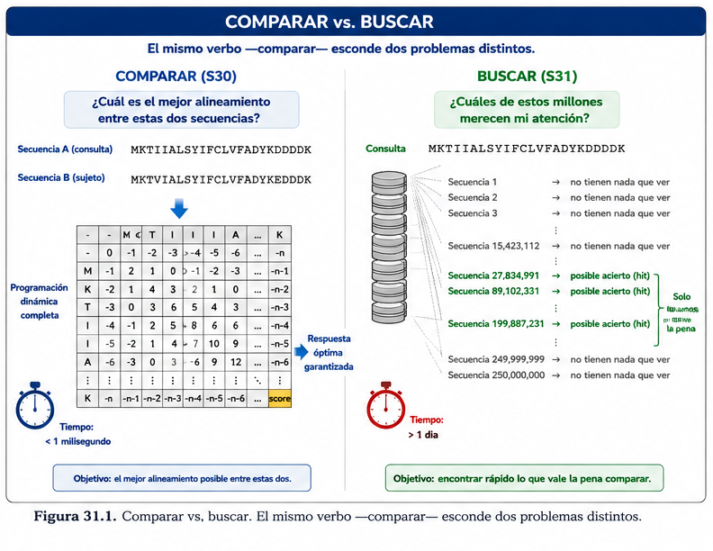
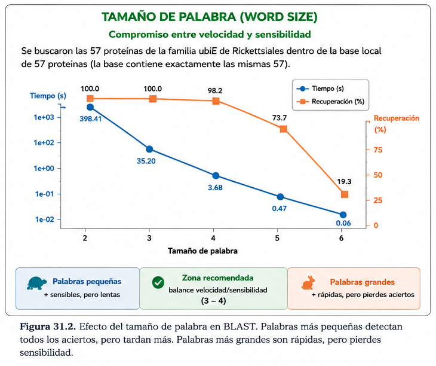
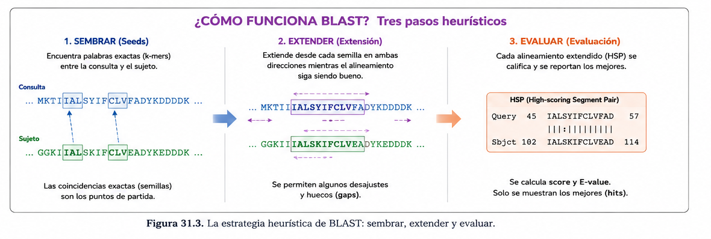

S31 — Buscar: comparar una secuencia contra una colección
Antes de clase lees este módulo y haces un primer intento: proponer, por escrito y sin ejecutar nada, cómo buscarías tu secuencia en una base enorme. Durante el taller construyes una base de datos local, ejecutas la búsqueda y compruebas cuánto de tu propuesta se sostenía. Después del taller entregas la búsqueda documentada y la sección del protocolo. El primer intento es formativo.
Ficha del módulo
| Elemento | Descripción |
|---|---|
| Unidad | 6 — Comparar secuencias para construir hipótesis biológicas (portada) |
| Sesión | S31 · 2 h |
| Competencias | F (principal); B, C, D, A, G (integradas) |
| Pregunta de la sesión | Tengo una secuencia. ¿Cómo encuentro rápidamente otras parecidas dentro de una base de datos enorme? |
| Datos | La misma consulta de S30 (ubiE de R. conorii) y una base local con tres familias —ubiE, era y hemE— en los mismos 19 organismos |
| Herramientas | makeblastdb, blastp y blastn en chaac; Unix de la Unidad 4 para leer las salidas |
| Lectura previa | Este módulo · Pearson (2013), primera mitad (la empezaste al salir de S30) |
| Producto | Una búsqueda reproducible, con base de datos documentada y estrategia justificada |
| Cambio conceptual | Alinear contra una secuencia → buscar candidatos en una colección |
Relación con lo anterior
S30 terminó con una cuenta incómoda. Alinear tu proteína contra otra cuesta unas 62 000 casillas y tarda menos de un milisegundo. Contra 250 millones de secuencias, más de un día por consulta.
Y con un agravante: la inmensa mayoría de ese día se gastaría calculando, con precisión milimétrica, el parecido entre proteínas que no tienen absolutamente nada que ver.
Hoy resolvemos eso. Pero conviene entender bien qué clase de problema tenemos delante, porque no es el mismo problema de S30 en versión grande.
Guarda todo en results/s31/.
1. Buscar no es comparar muchas veces [Indispensable]
Parece que sí. Parece que buscar en una base de datos es simplemente repetir la comparación de S30 una y otra vez. Y es justo esa intuición la que hay que romper.
| Comparar (S30) | Buscar (hoy) | |
|---|---|---|
| Cuántas secuencias | Dos, o unas pocas | Una contra millones |
| Quién eligió con qué comparar | Alguien lo eligió por ti | Nadie. Es lo que hay que averiguar |
| Qué quieres del resultado | El mejor alineamiento posible entre esas dos | Saber cuáles vale la pena mirar |
| Qué pasa si te equivocas un poco | Se rompe el análisis | Te sobra un candidato, o te falta uno |
| Qué respuesta necesitas | Exacta | Suficientemente buena, y rápida |
Lee otra vez la última fila. Ahí está todo.
Concepto esencial — la pregunta cambió, no solo la escala. En S30 preguntabas «¿cuál es el mejor alineamiento entre estas dos secuencias?» y existía una respuesta demostrablemente óptima. Hoy preguntas «¿cuáles de estos millones merecen mi atención?», y para esa pregunta la respuesta óptima no solo es cara: es innecesaria.
No necesitas el alineamiento perfecto con una proteína que vas a descartar de todos modos.

Figura 31.1. El mismo verbo —comparar— esconde dos problemas distintos. El de la derecha no se resuelve haciendo más veces el de la izquierda.
El vocabulario nuevo, que es corto
| Término | Qué es |
|---|---|
| Consulta (query) | La secuencia que estás investigando. Hoy: ubiE de R. conorii |
| Sujeto (subject) | Cada una de las secuencias de la base contra las que se compara |
| Base de datos | La colección donde buscas. No es un detalle técnico: define qué puedes encontrar |
| Acierto (hit) | Una secuencia de la base que el programa consideró suficientemente parecida como para reportarla |
La palabra hit suena a haber encontrado algo. Lo único que significa es que el programa decidió que valía la pena enseñártelo. Decidir cuál importa, y qué significa, es S32.
2. La idea que lo resuelve: no compares, descarta [Indispensable]
Vuelve al problema. De 250 millones de comparaciones, quizá unas decenas importan. El derroche está en el 99.99 % restante.
Así que la estrategia no es hacer las comparaciones más rápido. Es no hacerlas.
ESTRATEGIA EXACTA (S30) ESTRATEGIA DE BÚSQUEDA (hoy)
alinear con todas descartar casi todas, rápido y barato
↓ ↓
resultado óptimo garantizado alinear bien solo las que sobrevivieron
↓ ↓
inviable a esta escala resultado muy bueno, en segundosPara que funcione hace falta un filtro con dos propiedades que están en tensión:
- Barato: mirar una secuencia y descartarla tiene que costar muchísimo menos que alinearla.
- Prudente: no puede tirar a la basura las secuencias que sí importaban.
Concepto esencial — el compromiso central de la sesión. Un filtro más estricto descarta más y va más rápido, pero puede tirar cosas buenas. Un filtro más permisivo no pierde nada, pero deja pasar tanta basura que no ahorra tiempo.
Ese equilibrio tiene nombre: velocidad frente a sensibilidad. No hay una respuesta correcta universal; hay una decisión que se toma según la pregunta, y que debe quedar registrada.
Práctica 1 — Diseñar la búsqueda antes de ejecutarla (antes de clase, primer intento)
Antes de clase. Sin abrir la terminal. Este es tu primer intento.
Escribe media página respondiendo:
- ¿Qué pregunta biológica quieres responder sobre
ubiEde R. conorii? - ¿Contra qué buscarías? Describe la colección ideal para tu pregunta.
- ¿Usarías la versión de proteína o la de nucleótidos? Justifícalo con lo que viste en S30.
- Si tuvieras que descartar rápidamente millones de secuencias sin alinearlas, ¿qué mirarías primero? Propón algo concreto, aunque te parezca ingenuo.
- ¿Cómo sabrías que tu búsqueda funcionó? ¿Qué esperarías encontrar y qué no?
Durante el taller. Guarda el texto sin tocarlo.
Entrega. El original y una corrección argumentada: en qué se pareció tu idea del punto 4 a la de las semillas, y en qué se diferenció.
El punto 4 es el importante y no se espera que aciertes. Respuestas como «miraría si tienen longitudes parecidas» o «buscaría trozos iguales» son buenos primeros intentos —la segunda, de hecho, es la idea correcta.
3. Semillas: en qué consiste el filtro [Indispensable]
El filtro se apoya en una observación sencilla: si dos proteínas están emparentadas de verdad, en algún lugar tienen que coincidir literalmente en un tramo corto.
Es exactamente lo que viste en S30. grep fracasó buscando fragmentos largos, pero cuatro letras —CLEF— sí aparecían en los 19 organismos. Aquello parecía un fracaso. Aquí es el cimiento.
La estrategia se llama semilla (word, o k-mer): en vez de alinear, se pregunta si la secuencia comparte con la consulta al menos una palabra corta. Si no comparte ninguna, se descarta sin alinear nada.
Y esto se puede medir con tus datos
Vas a construir una base con tres familias de genes —ubiE, era y hemE— en los mismos 19 organismos. Son 57 proteínas, y sabes de antemano cuál es la respuesta correcta: si buscas ubiE, deberían salir los 19 ubiE y ninguna de las otras 38.
Aplicando el filtro de semillas con distintas longitudes de palabra, esto es lo que pasa:
| Longitud de la palabra | ubiE que pasan el filtro |
era + hemE que pasan |
|---|---|---|
| 3 | 19 de 19 | 38 de 38 |
| 4 | 19 de 19 | 22 de 38 |
| 5 | 19 de 19 | 1 de 38 |
| 6 | 19 de 19 | 0 de 38 |
| 7 | 19 de 19 | 0 de 38 |
| 8 | 17 de 19 | 0 de 38 |
Lee la tabla de arriba abajo y verás el compromiso entero:
- Con palabras de 3, el filtro no filtra. Pasan las 57. Cualquier par de proteínas comparte algún tramo de tres aminoácidos por puro azar. No has ahorrado nada.
- Entre 5 y 7 el filtro es casi perfecto: deja pasar los 19 verdaderos y prácticamente ninguno de los otros.
- Con palabras de 8 empiezas a perder verdaderos. Dos
ubiEreales —dos proteínas que sí están emparentadas con tu consulta— ya no comparten ninguna palabra exacta de ocho letras con ella y desaparecerían de tus resultados sin que nada te avisara.
Concepto esencial — ahí está la sensibilidad, y es un número. Pasar de 7 a 8 no produce un error, ni un mensaje, ni un aviso. Produce dos ausencias silenciosas. Y una ausencia en un resultado de búsqueda se parece muchísimo a «no existe».
Es la primera aparición del quinto principio de la unidad: la ausencia de evidencia no es evidencia de ausencia.

Figura 31.2. Velocidad y sensibilidad, medidas sobre las 57 proteínas de la base de la sesión. La franja central es la zona donde el filtro sirve. Fuera de ella se falla de dos maneras distintas, y solo una de las dos hace ruido.
La tabla usa coincidencia exacta, que es la versión simplificada de la idea. BLAST usa palabras de longitud 3 para proteínas, pero no exige que sean idénticas: acepta también palabras parecidas, las que superan cierta puntuación con la matriz de sustitución que ya conoces de S30. Por eso le funciona un valor tan corto. El mecanismo real es más fino; el compromiso que ilustra la tabla es el mismo.
4. De la semilla al resultado: extensión y HSP [Indispensable]
La semilla solo dice «aquí hay algo, vale la pena mirar». No es el resultado. Lo que sigue son dos pasos más:
1 · SEMBRAR buscar palabras cortas compartidas entre la consulta y cada secuencia
lo que no tiene ninguna, se descarta sin alinear ← aquí está el ahorro
↓
2 · EXTENDER desde cada semilla, crecer hacia los dos lados mientras la puntuación mejore
cuando empeora demasiado, se detiene
↓
3 · EVALUAR cada tramo que sobrevive es un HSP
se decide cuáles merecen reportarseEl producto de la extensión tiene nombre propio:
Concepto esencial — HSP (High-scoring Segment Pair). Un par de segmentos de alta puntuación: un tramo de la consulta alineado con un tramo de un sujeto, sin huecos en la versión más simple, que obtuvo buena puntuación.
Fíjate en la palabra segmento. Un HSP es un pedazo, no las secuencias completas. Y una misma pareja puede producir varios HSP en zonas distintas, si comparten más de una región.
Aquí es donde reaparece, con consecuencias, algo de S30:
En la sección 7.4 de S30 viste que un alineamiento local recorta el mejor tramo de cada secuencia y descarta el resto. BLAST hace exactamente eso, y por buenas razones: le permite encontrar un dominio compartido entre proteínas que por lo demás no se parecen en nada.
Pero también significa que un resultado excelente puede cubrir una porción minúscula de tu proteína. El programa no te lo va a decir a gritos: aparecerá en la lista igual que los demás. Aprender a detectarlo es el corazón de S32.

Figura 31.3. Los tres pasos. El truco no está en calcular más rápido: está en todo lo que nunca se calcula.
5. Qué significa que un método sea heurístico [Indispensable]
Ya puedes darle nombre a lo que estás haciendo.
Concepto esencial — heurístico. Un método heurístico es el que renuncia a garantizar la mejor respuesta a cambio de encontrar una muy buena en un tiempo razonable.
No es un método malo ni un método aproximado por descuido. Es una decisión de diseño explícita, tomada porque la respuesta garantizada existe pero no llega a tiempo.
La diferencia con S30 se puede decir en una línea:
| Needleman–Wunsch / Smith–Waterman | BLAST | |
|---|---|---|
| Qué promete | El alineamiento óptimo, demostrablemente | Encontrar casi siempre lo que importa |
| Qué pasa si hay algo bueno escondido | Lo encuentra, siempre | Puede no encontrarlo |
| Escala a millones de secuencias | No | Sí |
| Qué te devuelve | Un resultado | Candidatos |
Y de ahí sale la advertencia que gobierna el resto de la unidad:
Cuando una búsqueda no devuelve nada, hay al menos cinco explicaciones posibles y el programa no distingue entre ellas:
- No existe nada parecido.
- Existe, pero está tan lejos evolutivamente que el filtro no lo vio.
- Existe, pero no está en la base de datos que elegiste.
- Tu consulta es demasiado corta para producir señal.
- Los parámetros que usaste eran demasiado estrictos.
Un resultado vacío se lee igual en los cinco casos. Ninguna de las cinco es «no existe», y solo tú puedes empezar a distinguirlas.
6. Elegir el programa: no es un detalle [Indispensable]
BLAST no es un programa: es una familia. Los dos que usas hoy:
| Programa | Consulta | Base de datos | Cuándo |
|---|---|---|---|
blastp |
Proteína | Proteínas | Comparas proteínas |
blastn |
Nucleótidos | Nucleótidos | Comparas ADN o ARN |
Parece trivial. No lo es, y la razón viene directa de S30: los dos alfabetos no dan la misma señal. En la pareja más lejana de la sesión pasada, la proteína conservaba una señal diez veces por encima del azar y el ADN apenas se distinguía del ruido.
Concepto esencial — para buscar parentescos lejanos, proteína. La selección actúa sobre la proteína; el ADN cambia mucho sin que ella cambie. Si tu gen codifica una proteína y te interesa saber qué otros organismos lo tienen,
blastpverá cosas queblastnno puede ver, aunque los dos archivos contengan exactamente la misma información.
blastnes la herramienta correcta para regiones no codificantes, para ARN, o para comparar secuencias muy parecidas dentro de una misma especie. No es una versión inferior: responde otra pregunta.
Pedirle a blastn que busque una proteína en una base de proteínas no produce un resultado malo: produce un error, porque el programa espera un tipo de molécula y encuentra otro. Es un error afortunado. El que sí debería preocuparte es el que no da error: ejecutar blastn sobre las versiones de nucleótidos, obtener resultados perfectamente válidos, y no darte cuenta de que has hecho una pregunta distinta de la que querías hacer.
7. La base de datos es un objeto con procedencia [Indispensable]
Antes de buscar hay que decidir dónde. Y esa decisión determina qué puedes encontrar más que ninguna otra.
Piénsalo así: si tu base solo contiene bacterias, no encontrarás nada en eucariontes, y el resultado no dirá «no busqué ahí». Dirá lo mismo que si no existiera.
Concepto esencial — la base de datos es un dato, y necesita ficha. Como cualquier otro dato del curso desde la Unidad 1: de dónde salió, de cuándo es, qué contiene, cuántas secuencias tiene. Una búsqueda sin esa ficha no es reproducible, porque las bases públicas cambian: la misma consulta con los mismos parámetros da resultados distintos con seis meses de diferencia.
Local o remota
| Base local (hoy) | Base remota | |
|---|---|---|
| Qué contiene | Lo que tú pusiste, y solo eso | Millones de secuencias |
| Reproducibilidad | Total: el archivo es tuyo y no cambia | Depende de la versión y la fecha |
| Velocidad | Inmediata | Depende de la red y de la cola |
| Cuándo conviene | Preguntas acotadas, control total, docencia | Explorar lo que existe en el mundo |
Hoy construyes una base local, y no es una versión de práctica: es la única forma de que sepas de antemano la respuesta correcta y puedas comprobar si la herramienta la encuentra. Eso no se puede hacer con una base de 250 millones de secuencias.
Por qué hay que «construirla»
Un archivo FASTA no sirve tal cual para buscar: para descartar rápido hay que tener las palabras indexadas de antemano. makeblastdb no modifica tu FASTA: genera junto a él unos archivos auxiliares con ese índice. Es exactamente el mismo principio del filtro de la sección 3, preparado por adelantado.
El FASTA original sigue siendo el dato, y sigue viviendo en data/source/ sin tocarse. Los archivos de la base son derivados: van a results/, y si se pierden se reconstruyen con un comando. La distinción original/derivado es la misma desde la Unidad 1.
Práctica 2 — Construir una base de datos con procedencia (durante el taller)
Durante el taller. En chaac.
Arma el archivo de la base combinando las tres familias, con una herramienta que ya conoces:
mkdir -p results/s31/db cat data/source/ubiE/ubiE_19_org.faa \ data/source/ubiE/6951_era.faa \ data/source/ubiE/6960_hemE.faa \ > results/s31/db/tres-familias.faaAntes de seguir, audítala. ¿Cuántas secuencias tiene? ¿Cuántas de cada familia?
grep -c '^>' results/s31/db/tres-familias.faa grep '^>' results/s31/db/tres-familias.faa | cut -d '|' -f 5 | sort | uniq -cComprueba que no haya identificadores repetidos:
grep '^>' results/s31/db/tres-familias.faa | awk '{print $1}' | sort | uniq -dSi esto no imprime nada, no hay duplicados. Que no imprima nada es el resultado esperado, y conviene decirlo en voz alta: en Unix, el silencio suele ser la buena noticia.
Construye la base:
makeblastdb -in results/s31/db/tres-familias.faa \ -dbtype prot \ -title "Tres familias en 19 Rickettsiales - S31" \ -out results/s31/db/tres-familiasMira qué apareció en el directorio. ¿Se modificó tu FASTA? Compruébalo.
Escribe la ficha de la base en el protocolo: qué contiene, cuántas secuencias, de qué archivos salió, con qué comando se construyó y en qué fecha.
Entrega. La ficha de la base y el conteo por familia.
No es un conjunto cualquiera: son tres genes distintos en los mismos 19 organismos. Eso significa que conoces la respuesta correcta antes de buscar. Si pides ubiE y aparecen hemE, sabrás que algo va mal — y podrás demostrarlo. Casi nunca vas a tener ese lujo; aprovéchalo hoy.
Práctica 3 — La primera búsqueda (durante el taller)
Durante el taller.
Antes de ejecutar nada, escribe tu predicción: ¿cuántos aciertos esperas? ¿de qué familias?
Ejecuta:
blastp -query data/source/ubiE/ubiE_con.faa \ -db results/s31/db/tres-familias \ -out results/s31/ubiE_vs_tres-familias.tsv \ -outfmt 6El archivo tiene doce columnas. Hoy solo necesitas tres de ellas:
Columna Qué es 1 Identificador de la consulta 2 Identificador del sujeto — el acierto 12 La puntuación, que determina el orden Las otras nueve son el contenido de S32. Resiste la tentación de interpretarlas hoy.
Cuenta los aciertos y compáralos con tu predicción:
wc -l < results/s31/ubiE_vs_tres-familias.tsv cut -f 2 results/s31/ubiE_vs_tres-familias.tsv | sort -u | wc -l¿Por qué pueden no coincidir los dos números? (Pista: relee qué es un HSP.)
BLAST te devuelve identificadores, no organismos. Recupera el organismo de cada acierto cruzando con el archivo original:
cut -f 2 results/s31/ubiE_vs_tres-familias.tsv | sort -u | while read ID; do grep "^>$ID " results/s31/db/tres-familias.faa | cut -d '|' -f 2,5 done¿Aparecieron los 19
ubiE? ¿Apareció algunaeraohemE?
Entrega. Tu predicción, el conteo real, la lista de aciertos con su organismo y su familia, y dos frases sobre las diferencias entre lo que esperabas y lo que salió.
Es una de las lecciones más útiles de la sesión: la salida de una herramienta casi nunca trae los metadatos que necesitas para interpretarla. Los tienes que volver a unir tú, desde los datos originales, con las herramientas de la Unidad 4. Si alguna vez te preguntas para qué sirvió aprender cut y grep, esta es la respuesta.
Práctica 4 — Mover el filtro y ver qué se pierde (durante el taller)
Durante el taller. Aquí vas a provocar el fallo silencioso de la sección 3.
Repite la búsqueda cambiando el tamaño de la palabra:
for W in 3 5 7 ; do blastp -query data/source/ubiE/ubiE_con.faa \ -db results/s31/db/tres-familias \ -word_size $W \ -out results/s31/ubiE_w${W}.tsv \ -outfmt 6 done(El ciclo
fores el mismo de S26. Aquí solo cambia lo que hay dentro.)Cuenta los aciertos distintos de cada uno:
for W in 3 5 7 ; do printf '%s\t%s\n' "$W" "$(cut -f 2 results/s31/ubiE_w${W}.tsv | sort -u | wc -l)" done¿Se pierde algún acierto al aumentar la palabra? ¿Cuál, exactamente? Averígualo comparando las listas:
comm -23 <(cut -f 2 results/s31/ubiE_w3.tsv | sort -u) \ <(cut -f 2 results/s31/ubiE_w7.tsv | sort -u)Si desaparece alguno, identifica su organismo. ¿Es de los cercanos o de los lejanos? ¿Por qué tiene sentido?
Escribe tres frases: qué se gana al subir el tamaño de palabra, qué se pierde, y cómo te habrías dado cuenta si no hubieras hecho la comparación.
Entrega. La tabla de conteos, los identificadores perdidos si los hay, y las tres frases.
Este es el punto de la sesión donde más gente concluye de más. Si con palabra 7 no pierdes ninguno, la conclusión no es «7 es seguro»: es «en esta base concreta, con esta consulta concreta, 7 no perdió nada». Con proteínas más distantes, el resultado sería otro.
Práctica 5 — La misma pregunta en el otro alfabeto (durante el taller)
Durante el taller.
Construye una segunda base, ahora de nucleótidos, con las versiones
.fna:cat data/source/ubiE/ubiE_19_org.fna \ data/source/ubiE/6951_era.fna \ data/source/ubiE/6960_hemE.fna \ > results/s31/db/tres-familias-nt.fna makeblastdb -in results/s31/db/tres-familias-nt.fna \ -dbtype nucl \ -title "Tres familias, nucleotidos - S31" \ -out results/s31/db/tres-familias-ntBusca con
blastnusando la consulta de nucleótidos:blastn -query data/source/ubiE/ubiE_con.fna \ -db results/s31/db/tres-familias-nt \ -out results/s31/ubiE_nt.tsv \ -outfmt 6Compara el número de aciertos distintos con el de la Práctica 3. ¿Cuál encontró más? ¿Faltan organismos en uno de los dos? ¿Cuáles?
Provoca el error a propósito: intenta usar
blastncontra la base de proteínas. Copia el mensaje literal en tu bitácora.Escribe dos frases: por qué la búsqueda de proteína encuentra parientes que la de ADN no ve, y en qué situación preferirías
blastn.
Entrega. La comparación de aciertos, el mensaje de error literal y las dos frases.
8. Lo que hoy NO puedes afirmar [Indispensable]
Al terminar tendrás una lista de aciertos. Y la tentación va a ser enorme.
| Puedes afirmarlo — es una observación | No puedes afirmarlo todavía |
|---|---|
| «La búsqueda devolvió 19 aciertos» | «Encontré 19 ortólogos» |
«Ninguna proteína era apareció en el resultado» |
«era no está emparentada con ubiE» |
| «El primer acierto es el de R. africae» | «R. africae es el pariente más cercano» |
«Usé blastp sobre una base de 57 secuencias» |
«Busqué en todas las proteínas conocidas» |
| «Este acierto tiene la puntuación más alta» | «Este acierto es el más informativo» |
«Homólogo», «ortólogo» y «parálogo» no aparecen todavía en tus entregas. Hoy solo has aprendido a encontrar candidatos. Ordenarlos e interpretar sus métricas es S32; el vocabulario evolutivo, S33.
Práctica 6 — ¿Qué respondería la IA y cómo lo verificarías? (taller y entrega posterior)
Durante el taller (discusión) y después (entrega).
Alguien pregunta a una IA cómo buscar su proteína. La respuesta:
«Para encontrar secuencias similares a tu proteína, usa BLASTN con la base de datos
nr. Ejecutablastn -query proteina.faa -db nr -word_size 28y toma el primer resultado, que será el ortólogo. BLAST siempre encuentra todas las secuencias homólogas, así que si no aparece nada puedes concluir que la proteína es única de ese organismo.»
Tiene al menos cinco problemas. Uno de ellos es de S30, dos son de hoy, y dos son conceptuales.
- Identifícalos uno a uno. Para cada uno: qué afirma, por qué está mal, y cómo lo comprobarías.
- Al menos uno de los errores se puede demostrar ejecutándolo. Hazlo y pega el resultado.
- Reescribe la recomendación de forma que todo lo que diga sea defendible. Debería quedarte más larga que el original: la versión correcta necesita decir de qué depende cada decisión.
- Registra el ejercicio en
doc/bitacora-ia.md.
El error más grave no es el del programa. Es la última frase.
Entrega. La lista de problemas, la demostración ejecutada y la recomendación reescrita.
La sección del protocolo
Añade a doc/protocolo.md —sin borrar nada— una sección nueva:
## Unidad 6 · S31 — Búsqueda reproducible
### Pregunta biológica
[Qué quería averiguar]
### Secuencia consulta
- Identificador y versión:
- Tipo de molécula:
- Longitud:
- Procedencia y fecha:
### Base de datos
- Nombre:
- Qué contiene y por qué elegí esa:
- Archivos de origen:
- Número de secuencias:
- Comando de construcción:
- Fecha de construcción:
- Qué NO contiene (y por tanto no podría encontrar):
### Estrategia
- Programa y versión:
- Por qué ese programa y no otro:
- Parámetros que cambié respecto de los valores por omisión, y por qué:
- Comando completo:
### Archivos generados
| Archivo | Qué contiene |
|---|---|
### Resultados observados
- Aciertos distintos:
- Familias representadas:
- Lo que esperaba y no apareció:
### Limitaciones
[Qué no podría haber encontrado esta búsqueda, y por qué]
### Uso de IA
[Qué consulté, qué errores detecté, cómo los verifiqué]Es la que te va a impedir, dentro de tres semanas, leer un resultado vacío como si significara «no existe».
Evidencia de la sesión
| Archivo | Contenido |
|---|---|
results/s31/db/ |
Las dos bases construidas y sus FASTA de origen |
results/s31/*.tsv |
Las salidas de las búsquedas (Prácticas 3, 4 y 5) |
results/s31/tabla-word-size.md |
La tabla de la Práctica 4 |
doc/protocolo.md |
La sección nueva, completa |
doc/bitacora-ia.md |
La Práctica 6 |
| El primer intento y su corrección | La Práctica 1, en los dos estados |
Errores frecuentes y estrategias de diagnóstico
| Error | Por qué ocurre | Cómo se corrige |
|---|---|---|
| Decir «encontré 19 ortólogos» | Hit suena a haber encontrado algo definitivo | Hoy son candidatos. Interpretar la lista es S32; el vocabulario evolutivo, S33 |
| Leer un resultado vacío como «no existe» | Es la lectura intuitiva | Hay cinco explicaciones posibles (sección 5) y el programa no distingue |
Usar blastn para proteínas |
Es el nombre que más suena | El alfabeto determina el programa, y la pregunta determina el alfabeto |
| No documentar la base de datos | Parece infraestructura, no dato | Sin su ficha la búsqueda no es reproducible ni interpretable |
| Subir el tamaño de palabra «para afinar» | Suena a mayor precisión | Filtra más, sí, y pierde verdaderos en silencio |
| Tomar el primer acierto | Está arriba de la lista | El orden es por puntuación, no por relevancia biológica. S32 |
| Interpretar hoy las columnas 3 a 11 | Están ahí, tentadoras | Sin saber qué son, cualquier lectura es adivinar |
Meter los archivos de la base en data/source/ |
Son archivos de datos | Son derivados: van a results/ y se reconstruyen con un comando |
Rúbricas
Primer intento (Práctica 1) — formativo
| Nivel | Descriptor |
|---|---|
| Logrado | Entregó el diseño antes de clase, con una propuesta concreta para el punto 4, y después comparó su idea con la de las semillas señalando en qué se parecían |
| Parcialmente logrado | Entregó el diseño, pero la corrección se limita a describir lo que hace BLAST sin volver sobre lo que él mismo había propuesto |
| Aún no logrado | No entregó primer intento, o lo reescribió después |
Participación en el taller — formativo
| Nivel | Descriptor |
|---|---|
| Logrado | Construyó las bases, ejecutó las búsquedas y escribió su predicción antes de ver cada resultado |
| Parcialmente logrado | Ejecutó todo pero sin registrar predicciones previas |
| Aún no logrado | No llegó a ejecutar una búsqueda |
Tarea 1 — Búsqueda reproducible (Prácticas 2, 3 y 5)
| Nivel | Descriptor |
|---|---|
| Logrado | Las bases están construidas y auditadas; la ficha incluye número de secuencias y qué no contiene; los aciertos se reportan con organismo y familia recuperados desde los datos originales; la comparación entre alfabetos está justificada con el argumento de S30 |
| Parcialmente logrado | Las búsquedas están y funcionan, pero la base no tiene ficha, o los aciertos se reportan solo como identificadores sin recuperar el organismo |
| Aún no logrado | No hay salidas reproducibles, o los comandos no están registrados |
Tarea 2 — Sensibilidad y crítica (Prácticas 4 y 6)
| Nivel | Descriptor |
|---|---|
| Logrado | La tabla de tamaños de palabra está completa; si se perdió algún acierto lo identifica y lo explica; señala explícitamente que la pérdida es silenciosa; la crítica a la IA detecta al menos cuatro problemas, demuestra uno ejecutándolo y la reescritura no contiene afirmaciones no sustentadas |
| Parcialmente logrado | La tabla está pero sin analizar qué se perdió; o la crítica a la IA enumera errores sin demostrar ninguno |
| Aún no logrado | Concluye que un tamaño de palabra es «el correcto»; o la reescritura conserva la afirmación de que un resultado vacío prueba ausencia |
Autoevaluación
- ¿Puedo explicar por qué buscar no es comparar muchas veces?
- ¿Puedo explicar en qué consiste una semilla y por qué ahorra tiempo?
- ¿Puedo decir qué se sacrifica a cambio de la velocidad, y dar un ejemplo con mis datos?
- ¿Puedo dar tres razones distintas por las que una búsqueda puede no devolver nada?
- ¿Puedo justificar la base de datos que elegí, y decir qué no podría encontrar en ella?
Semáforo de salida, en una línea:
- 🟢 Podría explicarle a alguien por qué BLAST tenía que existir.
- 🟡 Ejecuté todo y funcionó, pero la idea de la heurística todavía se me escapa.
- 🔴 No conseguí construir la base o ejecutar la búsqueda.
Cierre con IA: clásico frente a asistido
Ya hiciste a mano la Práctica 4.
- Pídele a una IA que te recomiende un tamaño de palabra para tu búsqueda.
- Pregúntale después de qué depende esa recomendación.
- Compara las dos respuestas con tu propia tabla. ¿La primera dio un número sin condiciones?
- Anota en la bitácora si la segunda respuesta fue más prudente. Y anota también esto: tú tienes una tabla medida sobre tus datos, y la IA no. Esa es toda la diferencia.
Anexo A. Correspondencia resultado–actividad–evidencia–criterio
| RA | Actividad | Evidencia | Criterio | Momento | Nivel en S31 |
|---|---|---|---|---|---|
| Distinguir comparar de buscar | Sección 1 y Práctica 1 | Primer intento + corrección | Explica por qué son problemas distintos | Antes / después | Comprensión |
| Explicar la estrategia heurística | Secciones 2–5 y Práctica 4 | Tabla + tres frases | Describe semilla, extensión y HSP con sus propias palabras | Taller | Comprensión |
| Reconocer el compromiso velocidad/sensibilidad | Práctica 4 | Conteos y aciertos perdidos | Identifica la pérdida silenciosa | Taller / después | Ejecución |
| Construir una base documentada | Práctica 2 | Ficha de la base | Incluye número de secuencias y qué no contiene | Taller | Ejecución |
| Justificar el programa | Práctica 5 | Dos frases + error literal | Relaciona alfabeto, señal y pregunta | Taller / después | Ejecución |
| Ejecutar una búsqueda reproducible | Prácticas 3 y 5 | .tsv + protocolo |
Comandos, parámetros y versiones registrados | Taller / después | Ejecución |
| Evaluar una propuesta de IA | Práctica 6 | Bitácora | Detecta y demuestra al menos un error | Después | Diseño anticipado |
| Declarar los límites de una búsqueda | Protocolo, sección 8 | Sección de limitaciones | Distingue observación de inferencia | Después | Diseño anticipado |
Anexo B. Alineación transversal
| Dimensión | Cómo se trabaja en S31 |
|---|---|
| Reproducibilidad | Base construida con un comando registrado; FASTA de origen intacto; parámetros y versiones en el protocolo |
| Verificación | La base contiene tres familias conocidas: se comprueba si la búsqueda separa lo que debe separar |
| Validación | La predicción escrita antes de cada ejecución funciona como control independiente |
| Robustez | La misma consulta con tres tamaños de palabra y en dos alfabetos, comprobando qué cambia y qué no |
Glosario
| Español | Inglés | Qué es |
|---|---|---|
| Acierto | Hit | Secuencia de la base que el programa consideró digna de reportar |
| Base de datos de secuencias | Sequence database | Colección indexada donde se busca |
| Búsqueda por similitud | Similarity search | Localizar secuencias parecidas dentro de una colección |
| Extensión | Extension | Crecimiento de una semilla hacia ambos lados mientras la puntuación mejora |
| Heurístico | Heuristic | Método que renuncia al óptimo garantizado a cambio de rapidez |
| HSP | High-scoring Segment Pair | Par de segmentos de alta puntuación entre consulta y sujeto |
| Índice | Index | Estructura preparada de antemano que permite descartar rápido |
| Palabra / semilla | Word / seed | Fragmento corto compartido que dispara la comparación |
| Secuencia consulta | Query | La secuencia que se investiga |
| Secuencia sujeto | Subject | Cada secuencia de la base contra la que se compara |
| Sensibilidad | Sensitivity | Capacidad de encontrar lo que sí está |
| Tamaño de palabra | Word size | Longitud de la semilla; regula el compromiso velocidad/sensibilidad |
Distribución estimada de las dos horas
| Tiempo | Actividad |
|---|---|
| 0:00–0:12 | Puesta en común de los diseños de la Práctica 1. Se recogen en el pizarrón las ideas del punto 4 |
| 0:12–0:28 | De la cuenta de S30 a la idea de descartar. Figuras 31.1 y 31.3 |
| 0:28–0:45 | Práctica 2 — construir y auditar la base |
| 0:45–1:05 | Práctica 3 — la primera búsqueda, con predicción previa |
| 1:05–1:30 | Práctica 4 — mover el filtro. Figura 31.2 al terminar, con los datos propios en la mano |
| 1:30–1:45 | Práctica 5 — el otro alfabeto |
| 1:45–1:55 | Práctica 6 — la recomendación de la IA, en voz alta |
| 1:55–2:00 | Cierre: BLAST devolvió candidatos. ¿Cuál importa? Semáforo de salida |
La figura 31.2 se enseña después de la Práctica 4, no antes. Si se proyecta primero, los estudiantes ya saben la respuesta y la práctica se convierte en confirmar un resultado en vez de descubrirlo.
Lo que todavía falta
Hoy conseguiste algo que hace dos sesiones era imposible: preguntarle al mundo entero si tu gen existe en otra parte, y obtener respuesta en segundos.
Y ahora tienes un problema nuevo, que es mejor que el anterior pero es un problema.
Tienes una lista. Está ordenada por una puntuación que todavía no sabes leer. Trae nueve columnas que no has interpretado. Y cada línea de esa lista es, literalmente, un candidato: algo que el programa consideró digno de enseñarte, sin afirmar absolutamente nada sobre qué significa.
Hoy la base tenía 57 secuencias y los ubiE salieron limpiamente separados. Fue fácil porque tú mismo preparaste la base y sabías la respuesta. Con una base real, la lista traería cientos de aciertos, muchos de ellos parecidos entre sí, algunos anotados como «proteína hipotética», algunos cubriendo tu proteína entera y otros solo un fragmento.
Y entonces las preguntas que hoy no puedes ni empezar a responder:
- ¿Cuál de todos estos aciertos aporta la evidencia más sólida, y por qué ese y no el primero?
- ¿Qué significa exactamente cada una de esas columnas?
- ¿Cuándo un parecido deja de poder explicarse por azar?
Tener los candidatos no es tenerlos interpretados. Ese es el trabajo de S32.
Y todavía más adelante —cuando ya sepas rankear evidencia— quedará abierta otra:
- ¿A partir de qué evidencia puedo, por fin, usar la palabra homología?
Eso ya no es leer la tabla: es inferir. Es S33.
Referencias
- Altschul, S. F., Gish, W., Miller, W., Myers, E. W., & Lipman, D. J. (1990). Basic local alignment search tool. Journal of Molecular Biology, 215(3), 403–410. https://doi.org/10.1016/S0022-2836(05)80360-2
- Altschul, S. F., Madden, T. L., Schäffer, A. A., Zhang, J., Zhang, Z., Miller, W., & Lipman, D. J. (1997). Gapped BLAST and PSI-BLAST: a new generation of protein database search programs. Nucleic Acids Research, 25(17), 3389–3402. https://doi.org/10.1093/nar/25.17.3389
- Camacho, C., Coulouris, G., Avagyan, V., Ma, N., Papadopoulos, J., Bealer, K., & Madden, T. L. (2009). BLAST+: architecture and applications. BMC Bioinformatics, 10, 421. https://doi.org/10.1186/1471-2105-10-421
- Pearson, W. R. (2013). An introduction to sequence similarity («homology») searching. Current Protocols in Bioinformatics, 42, 3.1.1–3.1.8. https://doi.org/10.1002/0471250953.bi0301s42 — lectura obligatoria de la unidad